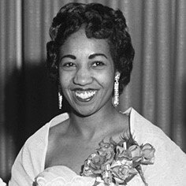

Violet King Henry
Violet King Henry est née le 18 octobre 1929 à Calgary, en Alberta. À un jeune âge, elle a su qu'elle voulait être avocate au pénal lorsqu'elle a grandi et le 2 juin 1954, elle est devenue la première avocate noire à pratiquer le droit au Canada et est devenue plus tard juge à la Cour d'appel de l'Alberta. En 1963, elle a déménagé dans le New Jersey et est devenue directrice exécutive de la branche communautaire du YMCA de Newark.
Sources:
L'Encyclopédie CanadienneHugh Burnett

Hugh Burnett est né le 14 juillet 1918 à Dresden, en Ontario. Hugh a joué un rôle important dans la lutte contre la législation anti-discrimination en Ontario. Bien qu'il se soit principalement battu pour les droits civils à Dresde, il a également joué un rôle important dans la lutte pour les droits civils au niveau provincial lié à la loi de 1954 sur les pratiques d'hébergement équitables.
Sources:
L'Encyclopédie CanadienneCharles Lightfoot Roman

Charles Lightfoot Roman, MD, est né le 19 mai 1889 à Port Elgin, en Ontario. Charles était connu comme chirurgien, auteur, chercheur et conférencier. Il a obtenu une maîtrise en chirurgie et un doctorat en médecine en 1919 de l'Université McGill et était un expert en médecine industrielle. Il a également servi pendant la Première Guerre mondiale et est l'un des premiers Canadiens noirs à s'enrôler. Il a également été le premier Noir à servir à l'Hôpital général canadien.